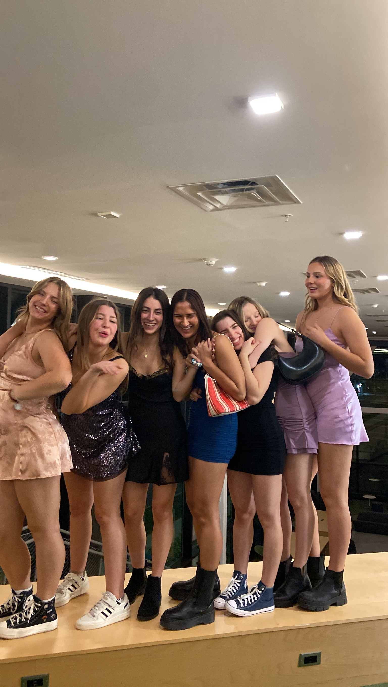

A little bit about me!
My intro
I am from Evanston, IL, the first suburb north of Chicago. I am a dual magazine journalism major in Newhouse and a psychology major in the College of Arts and Sciences with a minor in political science. I love to hear and tell stories, and I am passionate about reporting in a way that widens people's persepctives and helps them gain empathy. I love to write about my own interests, incuding music, food (I am a HUGE foodie), and politics. I also love to spend time with friends and family, workout, listen to music, study, and spend time outside. My friends and family, composed of my 21 old brother and parents, are two of the most important parts of my life.

My Syracuse friends and I at formal.
My handles
Instagram: @jojowerth
Spotify: @jojowerth
~ Challenge: Why is my text maroon? ~
My text is gray.
My favorite meme

Why I'm a great student
- I am organized
- My academics are important to me
- I'm not afraid to ask for help when I need it
- I participate
- I like school, studying, and the library
- I have an amazing support system
- I always try my best!
Top 3 most famous people from my hometown
- John Cusack --- Cusack is an actor famous for a variety of large roles in major films, including "Sixteen Candles" and "Love Actually."
- Laura Harrier--- Harrier played Liz Allan, Peter Parker's love interest, in "Spider-Man: Homecoming." She made an appearance at Mustand's Last Stand, an Evanston staple, a few years ago.
- Megan Twohey--- Twohey broke the Harvey Weinstein Me Too story for the New York Times in 2017. Fun fact: She also went to Evanston Township High School and we both wrote for the student newspaper there!
~ Challenge: Read my poetry ~
My Haiku:
I love Syracuse
Sometimes school stresses me out
But college is great
This is one of my favorite quotes
"Happiness can be found, even in the darkest of times, if one only remembers to turn on the light."
- Albus Dumbledore, "Harry Potter and the Prisoner of Azkaban"
These are more of my favorite books
- "The Seven Husbands of Evelyn Hugo"
- "Daisy Jones and the Six"
- "Harry Potter and the Half-Blood Prince"
Here's how I normally spend my weekend
~ Challenge: A very simple bar graph ~
My motivation leading to Thanksgiving break
3 weeks until break
2 weeks until break
1 week until break